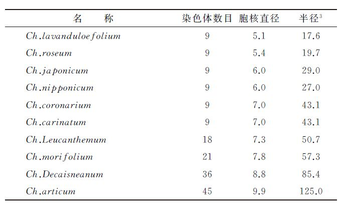
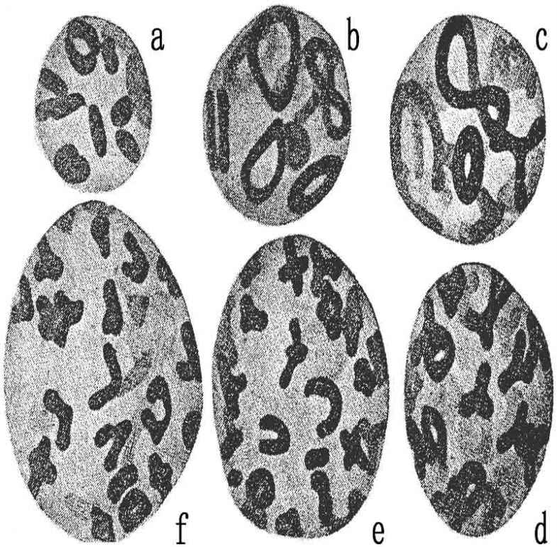

其他多倍系
除上述各多倍型外，在另一些群里也有过有多倍染色体的变种和物种的报道。
我们知道山柳菊Hieracium属内有一些物种进行有性生殖，另一些物种虽然有时甚至有一些正常花粉粒的雄蕊，却进行着单性生殖。Rosenberg在几种产生花粉的物种里，研究了它们的花粉的发生情况。他又研究了不同物种杂交所生的杂种。其中有含18条染色体（n＝9）的H.auricula同含36条染色体（n＝18）的H.aurantiacum杂交所生的杂种，Rosenberg研究了杂种花粉细胞的成熟分裂。在第一次成熟分裂时，杂种有九条二价染色体和九条单染色体，但也有一些例外，这或者由于在亲型H.aurantiacum花粉中染色体数目反常的缘故。在第一次分裂时，每条二价染色体分为两条，大多数单染色体也分裂起来。
另两种四倍体H.pilosella和H.aurantiacum各有36条染色体。Rosenberg也研究了它们的子代杂种的成熟分裂。杂种的体细胞有38~40条染色体。有两个例子：含18条二价染色体和四条单染色体，在含36条或42条染色体（n＝21）的H.excellens和含36条（n＝18）的H.aurantiacum的杂交中，有一个例子含18条二价染色体。所以H.excellans亲型可能有36条染色体。在另一个同样的杂交里，其子代花粉大都是不孕的，这里有大量的二价染色体和许多单染色体。在其他两个四倍体的杂交中，也看到同样结果。总之，从四倍体得到的结果表明，不同物种的染色体互相接合时，则各该物种即有着相同的染色体，或者至少是二价染色体的形成，由于异种中相同染色体的接合，比由于同一物种中相同染色体的联合，似乎更为可能。
Archieracium属内有兼营有性生殖和单性生殖的物种，以单性生殖比较常见。Rosenberg研究该种花粉的成熟作用。在单性生殖型的胚囊内，没有减数分裂，但依然保留二倍数目的染色体。花粉发育改变很大，有作用的花粉很少。在花粉母细胞内，减数分裂极不规则。Rosenberg曾经描述了几种无配子生殖（注：无配子生殖＝apogamous：配子体借营养繁殖法产生孢子体，其中没有配子的产生和受精。——译者注。）的山柳菊，其中花粉几乎完全无作用（图96）。据他解释，这些变化一部分由于他们起源于四倍体（大多数类型中出现二价染色体和单染色体），一部分也由于染色体之间的接合作用渐次消失，同时又抑制了一次成熟分裂。据说，卵母细胞内也可能发生类似的变化，从而使营单性生殖的卵子保留了全部染色体。
田原正人发现了多组系家菊。其中，10个变种（图97）各有9条染色体，不过染色体有大小之别，更重要的，是染色体的相对体积可以随变种的不同而异（图98）。这点留在以后讨论。另一要点，即在某些物种中，染色体的总数虽然相同，胞核体积却大小不一。另一些菊种的染色体为9的倍数（图99）。两种有18条；两种，27条；一种，36条；两种，45条。下表表示染色体数目和胞核体积的关系。


图96 山柳菊Hieracium属内几个无配子生殖的物种的花粉所具有的成熟分裂阶段（仿Rosenberg）

图97 家菊八个变种的染色体类型，各含减数后的九条染色体（仿田原正人）

图98 菊的不同变种的多倍染色体群；a.9条；b.9条；c.18条；d.21条；e.36条；f.45条（仿田原正人）

图99 几个家菊变种的终变期胞核：a和b有18条染色体；c有27条；d有36条；e有45条；f有45条（仿田原正人）
大泽一卫报道了桑树的三倍体变种。在他所研究过的85个变种中，40个为三倍体。两倍体的染色体数目为28（n＝14），三倍体的染色体数目为42（3×14）。二倍体植株有生殖能力，在三倍体内，成熟分裂表现紊乱情况（单价染色体），花粉粒和胚囊都不能成熟。当三倍体的花粉和大孢子母细胞进行第一次成熟分裂时，二价染色体有28条，单价体有14条。单价体任意走到一极，并在第二次分裂时各自分裂为二。
槭属（Acer）植物中，似乎也有多倍体的可能。据Taylor报道，有两种含26条染色体（n＝13）；有两种含52条（n＝26）；其他约含144条（n＝72），108条（n＝54）或72条（n＝36）。也发现过含不同数目的其他物种。
Tischler在甘蔗中看到：有些品种的单倍数为8条、16条和24条（二价）染色体。Bremer报道另外两个变种，一种约有40条单倍染色体，另一种56条，也有其他数字的报道。在这些组合中，有些或者由杂交得来，但在所观察到的染色体数目上的差异中，究竟有多少是来自杂交，目前还不知道。Bremer也研究过少数杂交的成熟分裂过程。
Heilborn谓，薹属Carex各物种的染色体数目，差别很大，却没有显明的多倍系。“现在重要的，是要给多倍体这个名词下一个比较明晰的定义。从第二章中染色体数目表看来，似乎有些数目以三为基数成为多倍系（9、15、24、27、33、36和42），有些以四为基数自成一系（16、24、28、32、36、40和56），其他以七为基数（28、35、42、56），依此类推，但作者认为仅仅这些数字关系，还不能看做多倍系的例子。多倍系的染色体群必须包括一定组数的单倍染色体，而且必须由这种组数相加而成。可是，我们知道，例如C.pululifera的九条染色体不是三个组而是三条大号、四条中号和两条小号染色体所组成；又如C.ericetorum也没有这样的五组，而是一条中号和14条小号染色体，因此，两物种的染色体群的起源不是由于一组一组的染色体的增加，而是通过其他途径。”在酸模、罂粟、桔梗、堇菜、风铃草和莴苣属里也报道过一些问题较多的多倍系。在以下各种内发现两种染色体数目，一种为另一种的二倍或三倍：如车前（6和12），滨藜属Atriplex（9和18），茅膏菜（10和20），长距兰（21和63）。我们知道山楂和覆盆子是复杂的多形的物种。据Longley近来的报导，两种表现着广泛的多倍性。

月见草（又称待霄草）